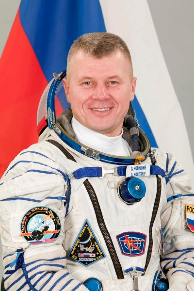

Герои, прославившие Беларусь
Космонавты, чьи имена навсегда вписаны в историю

Пётр Климук
Дважды Герой Советского Союза
Родился в деревне Комаровка Брестской области. Совершил три полёта: «Союз-13» (1973), «Союз-18» (1975), «Союз-30» (1978). Провёл в космосе более 78 суток.

Владимир Коваленок
Дважды Герой Советского Союза
Уроженец Минской области. Участник трёх экспедиций: «Союз-29», «Союз Т-4», «Союз Т-6». Одна из экспедиций длилась рекордные 140 суток.

Олег Новицкий
Герой Российской Федерации
Родился в Минской области. Совершил три космических полёта, провёл в космосе более 500 суток. Участник съёмок первого художественного фильма на МКС.
Марина Василевская
Первая женщина-космонавт Беларуси
Участница экспедиции МКС-21 в 2024 году. Бортпроводник «Белавиа», прошедшая сложнейший отбор и подготовку в Звёздном городке.
✨ Это лишь часть тех, кто внёс вклад в освоение космоса. Белорусские учёные, инженеры и конструкторы также сыграли важную роль в развитии космической отрасли.